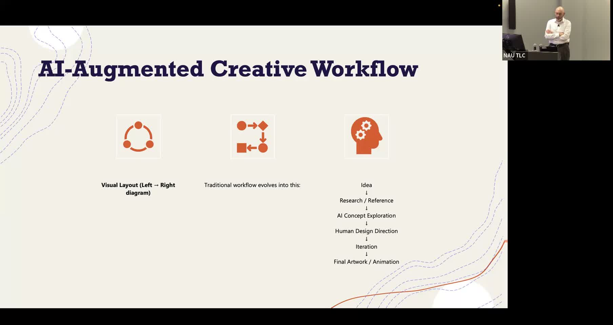

Chris Johnson: AI Week 2026 Presentation
Exploring AI-augmented creative workflows in design and media arts education.
Chris Johnson, NAU AI Week 2026
About This Project
Transcript not yet available. This project was presented at NAU's AI Week 2026.
Project Highlights
